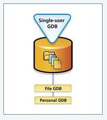
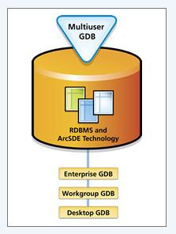

The geodatabase is the common data storage and management framework for ArcGIS. It combines "geo" (spatial data) with "database" (data repository) to create a central data repository for spatial data storage and management. It can be leveraged in desktop, server, or mobile environments and allows you to store GIS data in a central location for easy access and management.
Feature datasets and feature classes
Topological concepts
Single-User geodatabases
Multi-User geodatabases
Feature Datasets and Feature Classes Feature datasets are objects that allow you to group together related feature classes.The feature dataset has collection of feature classes stored together that share the same spatial reference. Feature classes in a feature dataset share a coordinate system, and their features fall within a common geographic area. Feature datasets are used to help model spatial relationships between feature classes. Feature Class Feature classes are homogeneous collections of common features, each having the same spatial representation, such as points, lines, or polygons, and a common set of attribute columns, for example, a line feature class for representing road centerlines. The four most commonly used feature classes in the geodatabase are points, lines, polygons, and annotation.
Feature Dataset
Topological Concepts
In a GIS, topology is a set of rules which define the relationship between points, lines, and polygons. Topological or topology-based data are useful for detecting and correcting digitizing errors, e.g. two lines in a roads vector layer that do not meet perfectly at an intersection. Folloing is the link for topology rules poster:
http://help.arcgis.com/en/arcgisdesktop/10.0/help/001t/pdf/topology_rules_poster.pdf
Many toplogical Relationship between A and B can be specified using 9 intersection model. Nine intersections are:
Intersections between interior, boundary, exterior of A, B.
Single-User Geodatabases
The single-user geodatabase is for individual GIS work in a desktop environment. It is available as either the file geodatabase or the Microsoft Access personal geodatabase.  File geodatabases are recommended as the primary format for data in a file system folder going forward. File geodatabases have the ability to handle far larger datasets (1 TB per dataset) than personal geodatabases and expected to be more stable and possibly faster. Personal geodatabase is original data format for ArcGIS geodatabases stored and managed in Microsoft Access data files. Personal geodatabases have limitations on size (2 GB) and stability.
Single-User Geodabase
Multi-User Geodatabases
The multiuser geodatabase uses ArcSDE technology and a relational database management system (RDBMS) to store large amounts of GIS data. ArcSDE geodatabases stored in a relational database using Oracle, Microsoft SQL Server, IBM DB2, IBM Informix, or PostgreSQL. These multiuser geodatabases and can be unlimited in size and numbers of users.  Multi-User Geodabase
Reference/Source:
The geodatabase is the common data storage and management framework for ArcGIS. The all above information is referenced from www.esri.com
Reflection
I worked with ArcGIS tools in my earlier course works for Masters in Geographic Science and Technology program. I had understanding about spatial data but never understood how this spatial data stored in the database and surface through ArcGIS tools. After I learned Geodatabase in this course, now concept of how spatial data store and display through ArcGIS is clear to me. Now I clearly understand Single User and Multi User Geodatabases. The concept of Feature Dataset is also clear to me as well.